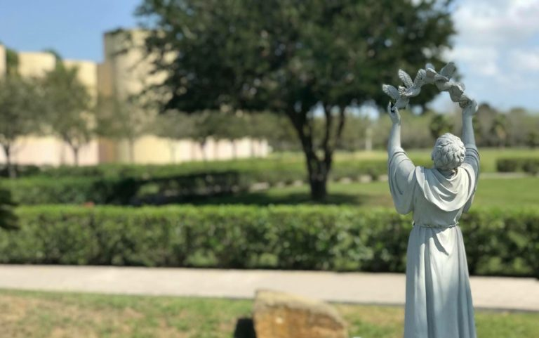
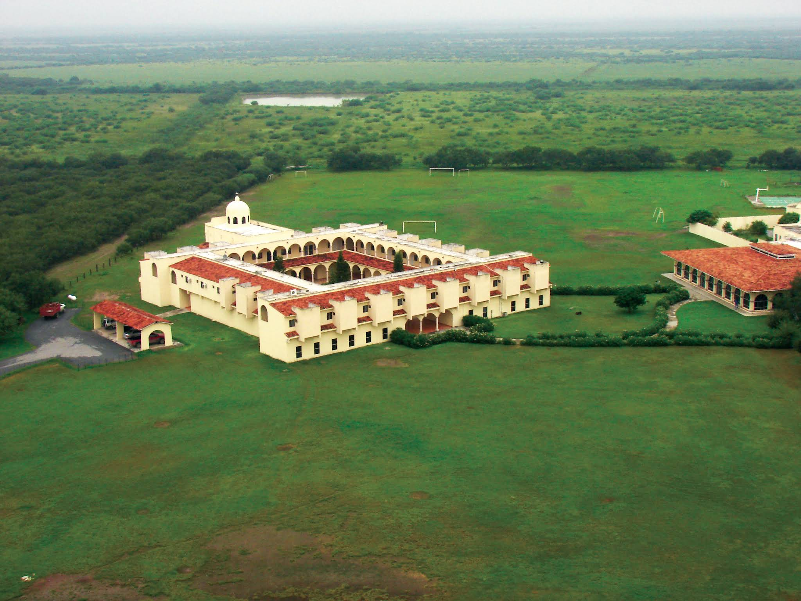

Obispo
S.E. Mons. Eugenio Andrés Lira Rugarcía
Seminario Diocesano San José
Bienvenido al sitio del Seminario Diocesano de la Diócesis de Matamoros-Reynosa. Aquí podrás conocer nuestra historia, al equipo formador y la información de contacto del Seminario.


Nuestro Seminario
El Seminario de Matamoros fue fundado el 8 de septiembre de 1959 por el primer Obispo de Matamoros, Mons. Estanislao Alcaráz y Figueroa. Su primer Rector fue el entonces Pbro. Sabás Magaña García. Las primeras instalaciones se encontraban en la calle 7 y Matamoros, y el primer alumno en inscribirse fue Fabián Sánchez Ruiz.
El 19 de marzo de 1961, el Seminario se trasladó a un nuevo edificio ubicado en la calle Sexta y Francisco González Villarreal. La bendición de las instalaciones estuvo a cargo del Cardenal José Garibi Rivera.
En 1968, Mons. Alcaráz fue trasladado a la Diócesis de San Luis Potosí. El 6 de enero de 1969, Mons. Sabás Magaña García, quien hasta entonces había sido Rector del Seminario, fue consagrado como segundo Obispo de Matamoros. El Pbro. Roberto Ramírez Hernández asumió entonces la Rectoría.
En 1973, el Seminario Mayor cerró temporalmente sus puertas y los seminaristas continuaron su formación en distintos seminarios de México y del extranjero, entre ellos Montezuma, Tula, Aguascalientes y Monterrey. Algunos también realizaron estudios en la Universidad Pontificia de México y en el Colegio Mexicano en Roma.
En 1987, después de 18 años de servicio como Rector, Mons. Roberto Ramírez Hernández dejó el cargo y fue sucedido por el Pbro. Pedro Contreras Hernández. Años más tarde, bajo el episcopado de Mons. Francisco Javier Chavolla Ramos, tercer Obispo de Matamoros, comenzó el proyecto para construir nuevas instalaciones fuera de la ciudad.
El 8 de septiembre de 1995 fueron bendecidas las nuevas instalaciones del Seminario Menor. En 1998, el Pbro. Pedro Contreras dejó la Rectoría y fue sucedido por el Pbro. Margarito Salazar Cárdenas. Un año después, el Seminario recibió la visita del Nuncio Apostólico en México, Mons. Justo Mullor García.
El 8 de septiembre de 2001 fue bendecido el actual edificio del Instituto de Teología, dedicado a Mons. Estanislao Alcaráz y Figueroa. En 2005 tomó posesión de la Diócesis Mons. Faustino Armendáriz Jiménez, y en agosto de 2007 el Pbro. Santiago Enríquez Rangel asumió la Rectoría del Seminario.
Entre 2008 y 2009 se celebró el Cincuentenario del Seminario. El 8 de septiembre de 2008 tuvo lugar la primera ordenación sacerdotal celebrada en las instalaciones del Instituto de Teología, en la que Bernabé Quezada recibió el orden sacerdotal. El 8 de septiembre de 2009 se celebró una Misa solemne de acción de gracias por los primeros 50 años de vida del Seminario.
En 2011 tomó posesión como quinto Obispo de Matamoros Mons. Ruy Rendón Leal. Durante su episcopado, el 27 de marzo de 2013, se anunció la reapertura del Instituto de Filosofía y la construcción de instalaciones destinadas a esta etapa de formación.
El 12 de noviembre de 2016 llegó a la Diócesis Mons. Eugenio Andrés Lira Rugarcía como sexto Obispo de Matamoros. Desde el inicio de su ministerio episcopal señaló la formación sacerdotal y la promoción de las vocaciones entre sus prioridades, reuniéndose con la comunidad del Seminario apenas dos días después de su llegada.
A lo largo de su historia, el Seminario ha acompañado la vida de la Diócesis formando generaciones de seminaristas y futuros sacerdotes al servicio de la Iglesia.
Sacerdotes responsables de acompañar la formación humana, espiritual, académica y pastoral de los seminaristas.
S.E. Mons. Eugenio Andrés Lira Rugarcía
Pbro. Jorge Molina Fiscal
Pbro. Carlos Sánchez Castillo
Pbro. Lic. Lisandro Torres Zamarripa
Pbro. Arturo García Rodríguez
Pbro. Lic. Santiago Franco Melchor
Pbro. José Ángel Vergara Esquivel
Pbro. Martín Nicolás Hinojosa Torres
Pbro. Lic. Lisandro Torres Zamarripa
Información general del Seminario Diocesano San José.
Carretera a Ciudad Victoria Km 13.5
Matamoros, Tamaulipas, México
C.P. 87560
(868) 812-0623
Control Escolar
Acceso para alumnos, profesores y personal de Control Escolar.